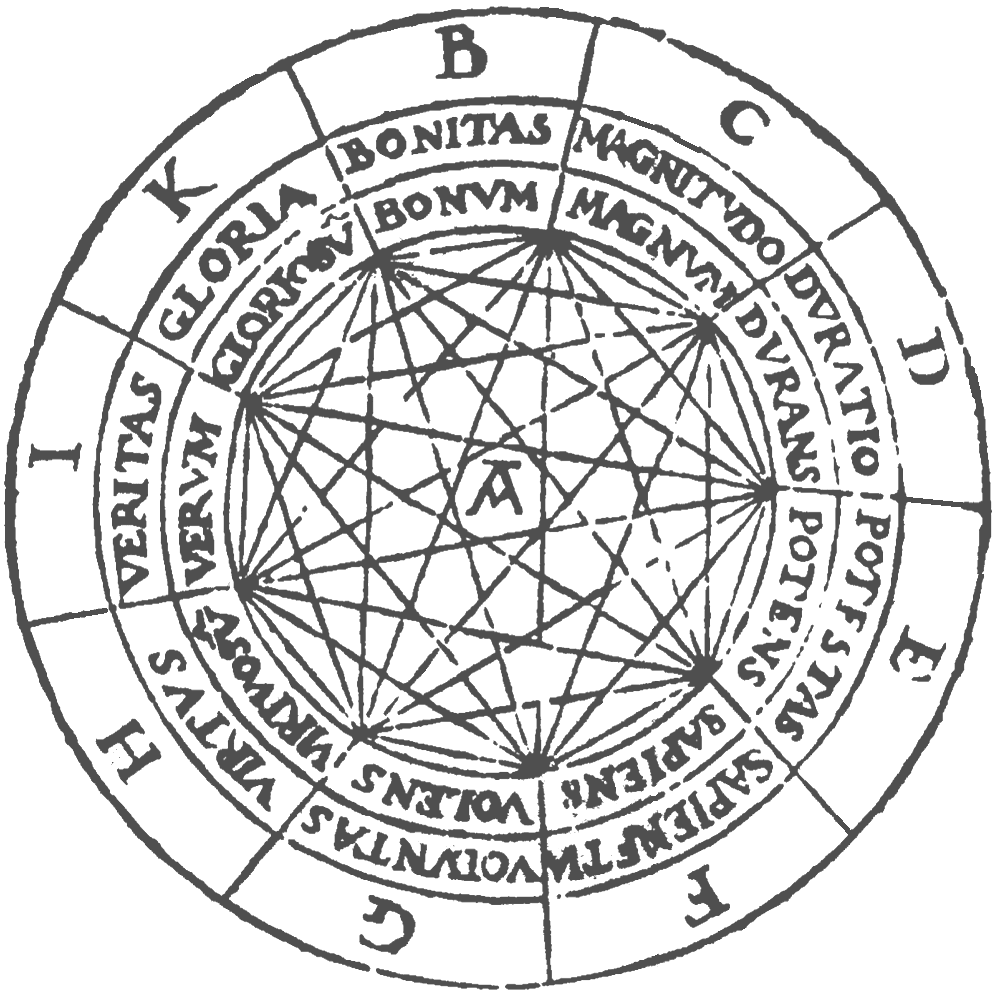

1. Introduction
1.1. Historical background
In the thirteenth century, Ramon Lull, an eccentric Franciscan monk on the Island of Majorca, wrote a work called the Ars Magna, which contains mechanical devices designed to aid reasoning. For example, Lull claimed that the reason that infidels did not accept the Christian god was that they failed to appreciate the multiplicity of God’s attributes, so he designed nested paper circles with letters and words signifying these attributes. By rotating the circles, one obtained various combinations of the words and symbols, signifying compound attributes. For example, in one configuration, one might read off the result that God’s greatness is true and good, and that his power is wise and great. Other devices and diagrams would assist in reasoning about virtues and vices, and so on.
{kind=link}
Today, this sounds silly, but the work was based on three fundamental ideas that are still of central importance.
First, we can use symbols, or tokens, to stand for ideas or concepts.
Second, compound ideas and concepts are formed by putting together simpler ones.
And, third, mechanical devices—even as simple a concentric rotating wheels—can serve as aids to reasoning.
The first two ideas go back to ancient times and can be found in the work of Aristotle. The third, however, is usually attributed to Lull, marking his work as the origin of mechanized reasoning.
Four centuries later, Lull’s work resonated with Gottfied Leibniz, who invented calculus around the same time that Isaac Newton did so independently. Leibniz was also impressed by the possibility of symbolic representations of concepts and rules for reasoning. He spoke of developing a characteristica universalis—a universal language of thought—and a calculus ratiocinator—a calculus for reasoning. In a famous passage, he wrote:
If controversies were to arise, there would be no more need of disputation between two philosophers than between two calculators. For it would suffice for them to take their pencils in their hands and to sit down at the abacus, and say to each other (and if they so wish also to a friend called to help): Let us calculate.
The last phrase—calculemus! in the original Latin—has become a motto of computer scientists and computationally-minded mathematicians today.
The development of modern logic in the late eighteenth and early nineteen centuries began to bring Leibniz’ vision to fruition. In 1931, Kurt Gödel wrote:
The development of mathematics towards greater precision has led, as is well known, to the formalization of large tracts of it, so that one can prove any theorem using nothing but a few mechanical rules.
It is notable that the use of the word “mechanical” here—mechanischen in the original German—predates the modern computer by a decade or so.
What logicians from the time of Aristotle to the present day have in common is that they are all at least slightly crazy. They are driven by the view that knowledge is rooted in language and that the key to knowledge lies in having just the right symbolic representations of language and rules of use. But often it’s the crazy people that change the world. The logical view of language and knowledge lies at the heart of computer science and provides the foundation for some of our most valuable technologies today, including programming languages, automated reasoning and AI, and databases.
That’s what this course is about: the logician’s view of the world, the power of symbolic representations of language, and the way those representations facilitate the mechanization of reasoning and the acquisition of knowledge.
The logicians’ view complements the view from statistics and machine learning, where representations of knowledge tend to be very large, approximate, and hard to represent is succinct symbolic terms. Such methods have had stunning successes in recent years, but there are still branches of computer science and AI where symbolic methods are paramount. It is an important open question as to the best way to combine logical, statistical, and machine learning methods in the years to come.
1.2. An overview of this course
This course is designed to teach you the mathematical theory behind symbolic logic, with an eye towards putting it to good use. An interesting aspect of the course is that it develops three interacting strands in parallel:
Theory. We will teach you the syntax and semantics of propositional and first-order logic. If time allows, we will give you a brief overview of related topics, like simple type theory and higher-order logic.
Implementation. We will teach you how to implement logical syntax—terms and formulas—in a functional programming language called Lean. We will also teach you how to carry out fundamental operations and transformations on these objects.
Application. We will show you how to use logic-based automated reasoning tools to solve interesting and difficult problems. In particular, we will use a SAT solver called CaDiCaL, an SMT solver called Z3, and a first-order theorem prover called Vampire (and by then you will understand what all these terms mean).
The first strand will be an instance of pure mathematics. We will build on the skills you have learned in a course on the mathematical foundations of computer science. The goal is to teach you to think about and talk about logic in a mathematically rigorous way.
The second strand will give you an opportunity to code up some of what you have learned and put it to good use. Our goal is to provide a foundation for you to use logic-based computational methods in the future, whether you choose to make use of them in small or large ways. In the third strand, for illustrative purposes, we will focus mainly on solving puzzles and combinatorial problems. This will give you a sense of how the tools can also be used on proof and constraint satisfaction problems that come up in fields like program verification, discrete optimization, and AI.
1.3. Acknowledgments
We are grateful to Seulkee Baek for implementing the link between Lean and a SAT solver.